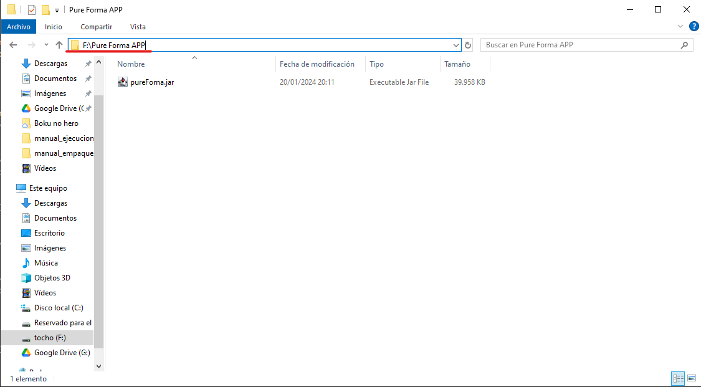

Inicio
PUREFORMA es una aplicación Java desarrollada en el JDK 20, por lo que es necesario tenerlo instalado para garantizar su correcto funcionamiento. En este manual, se proporcionará una guía detallada sobre cómo instalar el JDK necesario y cómo proceder con la ejecución de la aplicación.
Descarga e instalación del JDK 20.0.2.
En este apartado describiremos detalladamente el proceso de descarga e instalación del JDK 20.
- El primer paso es dirigirnos a la página de descargas de oracle,a la cual podemos acceder desde este enlace o bien copiando y pegando esta URL en la barra de navegacion de nuestro buscador "https://www.oracle.com/java/technologies/javase/jdk20-archive-downloads.html"
- Una vez en la página, nos desplazamos hacia abajo y seleccionamos la versión del JDK según el sistema operativo de nuestro dispositivo. En este caso vamos a instalar la version para Windows x64 msi.
- Una vez abierto el instalador, clicamos en "Next".
- Seleccionamos la ubicacion en la que queremos que se almacene el JDK (recomendable no cambiar la ruta predeterminada) y continuamos.
- Change: si deseamos cambiar la ruta donde se va a almacenar el JDK clicaremos aquí y seleccionaremos la ruta deseada.
- Next: al clicar sobre este botón avanzaremos al siguiente paso del proceso de instalación.
- Nos saldrá una ventana con una barra de carga, esperamos a que termine.
- Una vez terminado el proceso de instalación, podremos acceder a la documentación o simplemente cerrar la ventana.
- Next Steps: Al clicar sobre este botón se nos abrirá una pestaña del navegador con la documentacion del JDK 20.
- Close: cierra el asistente de instalación.
Descarga del JDK 20.0.2.
- El primer paso es dirigirnos a la página de descargas de oracle,a la cual podemos acceder desde este enlace o bien copiando y pegando esta URL en la barra de navegacion de nuestro buscador "https://www.oracle.com/java/technologies/javase/jdk20-archive-downloads.html"
- Una vez en la página, nos desplazamos hacia abajo y seleccionamos la versión del JDK según el sistema operativo de nuestro dispositivo. En este caso vamos a instalar la version para Windows x64 msi.
Instalación del JDK 20.0.2.
- Una vez abierto el instalador, clicamos en "Next".
- Seleccionamos la ubicacion en la que queremos que se almacene el JDK (recomendable no cambiar la ruta predeterminada) y continuamos.
- Change: si deseamos cambiar la ruta donde se va a almacenar el JDK clicaremos aquí y seleccionaremos la ruta deseada.
- Next: al clicar sobre este botón avanzaremos al siguiente paso del proceso de instalación.
- Nos saldrá una ventana con una barra de carga, esperamos a que termine.
- Una vez terminado el proceso de instalación, podremos acceder a la documentación o simplemente cerrar la ventana.
- Next Steps: Al clicar sobre este botón se nos abrirá una pestaña del navegador con la documentacion del JDK 20.
- Close: cierra el asistente de instalación.
Ejecucion de la aplicación utilizando la consola de comandos de windows (CMD).
Aquí se esplica cómo se ejecuta la aplicacion utilizando la consola de comandos de windows.
- Escribimos CMD en la barra de búsquedade windows y clicamos en la aplicación.
- Nos dirigimos a la ubicación en la que se encuentra la aplicación y hacemos click en la barra de busqueda superior para observar la ruta.

- Dado que la CMD se encuentra posicionado en la unidad C: y la aplicación en la unidad F: introduciremos F: en la CMD para cambiar de unidad.
- Dado que el directorio en el que se encuentra nuestra aplicación está en la raíz escribiremos 'cd "Pure Forma APP"' para posicionarnos en el directorio de la app.
- Ahora que estamos posicionados en la ubicación en la que se encuentra nuestra app, introduciremos el comando java -jar nombre_del_archivo.jar donde "nombre_del_archivo.jar" será cambiado por el nombre de nuestra app, en este caso el comando quedaría de la siguiente forma "java -jar pureFoma.jar".